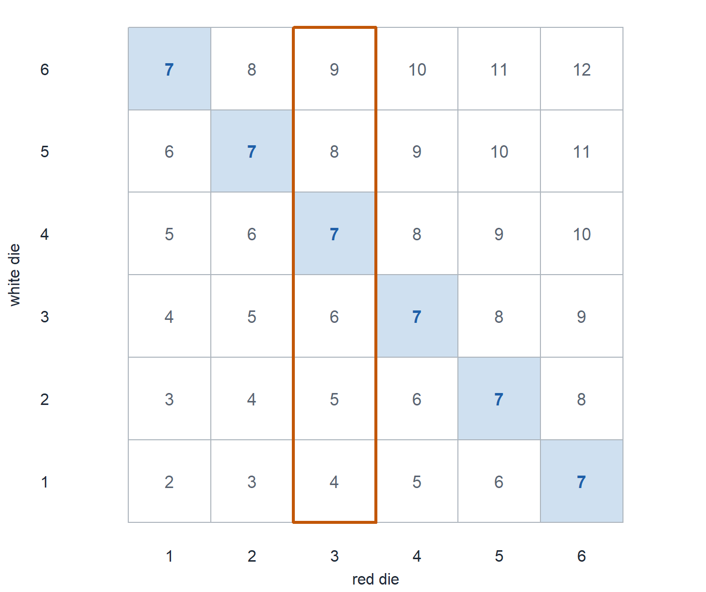
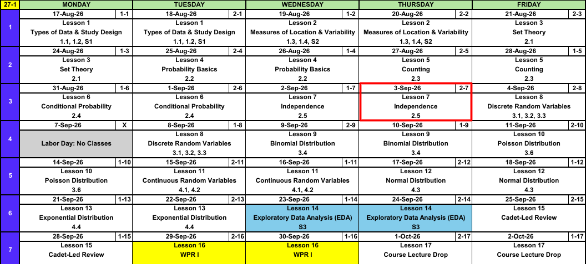
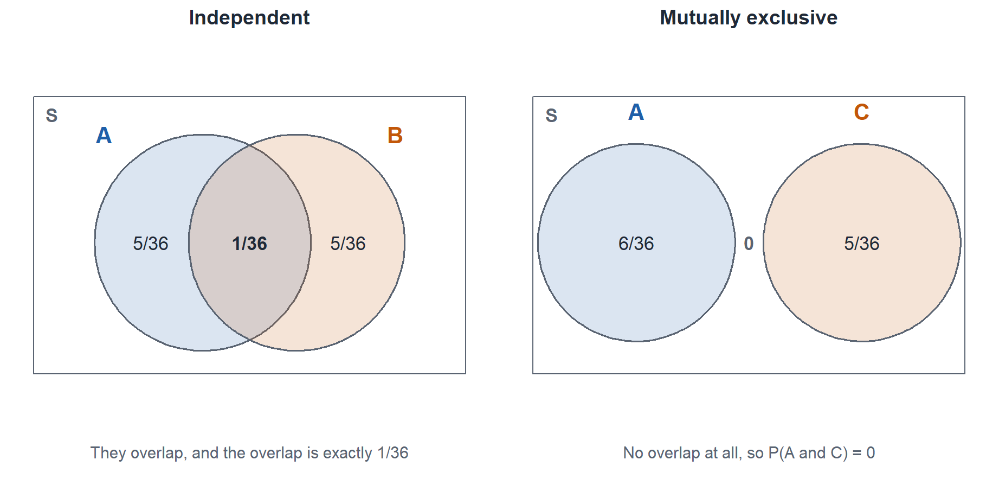

Lesson 7: Independence
Independence.
Calendar

What We Did: Lessons 1 through 6
NoteReview: Data, Study Design, and Summaries (Lessons 1 and 2)
- Population vs sample, parameter (\(\mu\), \(\sigma\), \(p\)) vs statistic (\(\bar{x}\), \(s\), \(\hat{p}\)).
- Random sampling buys generalization, random assignment buys causation.
- Center: mean, median, trimmed mean. Spread: \(s^2\), \(s\), and the fourth spread \(f_s\).
NoteReview: Set Theory (Lesson 3)
- Experiment, sample space \(\mathcal{S}\), event as a subset of \(\mathcal{S}\).
- Union \(A \cup B\) is “or”, intersection \(A \cap B\) is “and”, complement \(A'\) is “not”.
- Mutually exclusive: \(A \cap B = \emptyset\).
- De Morgan: \((A \cup B)' = A' \cap B'\) and \((A \cap B)' = A' \cup B'\).
NoteReview: Probability Basics (Lesson 4)
- Three axioms: \(P(A) \ge 0\), \(P(\mathcal{S}) = 1\), and mutually exclusive events add.
- Complement rule: \(P(A') = 1 - P(A)\).
- Addition rule: \(P(A \cup B) = P(A) + P(B) - P(A \cap B)\).
- Equally likely outcomes: \(P(A) = N(A)/N\).
NoteReview: Counting (Lesson 5)
- Product rule: \(n_1 n_2 \cdots n_k\).
- Permutation (order matters): \(P_{k,n} = \dfrac{n!}{(n-k)!}\).
- Combination (order does not): \(\dbinom{n}{k} = \dfrac{n!}{k!\,(n-k)!}\).
NoteReview: Conditional Probability (Lesson 6)
- Conditional probability: \(P(A \mid B) = \dfrac{P(A \cap B)}{P(B)}\), conditioning renormalizes to \(B\).
- Multiplication rule: \(P(A \cap B) = P(A \mid B)\,P(B)\).
- Law of Total Probability: \(P(B) = \sum_{i=1}^{k} P(B \mid A_i)\,P(A_i)\).
- Bayes’ Theorem: flips the conditioning, and \(P(A \mid B) \ne P(B \mid A)\).
Every one of those rules assumed \(B\) told you something about \(A\). Today is the case where it tells you nothing.
Warm-Up: Bae’s Theorem
Your friend goes on a date with Taylor Swift. Historically, \(30\%\) of her dates go well, \(50\%\) are meh, and \(20\%\) go badly.
Whether she writes a song about the date depends on how it went. After a date that went well she writes one \(10\%\) of the time. After a meh date, \(30\%\) of the time. After a date that went badly, \(90\%\) of the time.
NoteQuestion
She wrote a song about your friend’s date. What is the probability it went badly?
TipAnswer
Let \(S\) = she writes a song, and let \(W\), \(M\), \(B\) = the date went well, meh, badly.
- \(P(W) = 0.30\), \(P(M) = 0.50\), \(P(B) = 0.20\)
- \(P(S \mid W) = 0.10\), \(P(S \mid M) = 0.30\), \(P(S \mid B) = 0.90\)
\(W\), \(M\), \(B\) partition the outcomes, so the Law of Total Probability gives the denominator:
\[P(S) = P(S \mid W)\,P(W) + P(S \mid M)\,P(M) + P(S \mid B)\,P(B)\]
\[P(S) = (0.10)(0.30) + (0.30)(0.50) + (0.90)(0.20) = 0.03 + 0.15 + 0.18 = 0.36\]
Then Bayes:
\[P(B \mid S) = \frac{P(S \mid B)\,P(B)}{P(S)} = \frac{(0.90)(0.20)}{0.36} = \frac{0.18}{0.36} = 0.50\]
Only \(20\%\) of dates go badly, but bad dates are so much more likely to become songs that they are half of all the songs.
What We’re Doing: Lesson 7
Objectives
- Define independent events and use independence to simplify probability calculations. (SLO 7)
- Combine counting techniques with independence. (SLO 7)
Required Reading
Devore 2.5
Break!
Family
The Takeaway for Today
NoteKey Concepts from Lesson 7
- Independence: \(A\) and \(B\) are independent when \(P(A \mid B) = P(A)\)
- Equivalent test: \(P(A \cap B) = P(A)\,P(B)\)
- Independence makes the multiplication rule stop asking for a conditional probability
- Mutually exclusive is not independent. Disjoint events are as dependent as events get
- At least one: \(P(\text{at least one}) = 1 - P(\text{none})\), and under independence the “none” side is a product
A Question First
Roll a red die and a white die. Let’s define two events.
- \(A\): the sum of the two dice is \(7\)
- \(B\): the red die shows a \(3\)
If we know something about \(B\), does that change the probability of \(A\)?
Start with each event on its own.
- \(P(A) = \dfrac{6}{36} = \dfrac{1}{6}\)
- \(P(B) = \dfrac{1}{6}\)
So does \(B\) have any impact on \(A\)? Does \(P(A \mid B) = P(A)\)?
Given the red die shows a \(3\), what is the probability the sum is \(7\)? That is \(P(A \mid B)\).
Knowing \(B\) leaves only the outlined column, and exactly one of those six cells sums to \(7\), the cell \((3,4)\). So \(P(A \mid B) = 1/6\), and the Lesson 6 formula agrees:
\[P(A \mid B) = \frac{P(A \cap B)}{P(B)} = \frac{1/36}{1/6} = \frac{1}{6} = P(A)\]
\(B\) had no impact on \(A\). Every column holds exactly one way to reach a \(7\), so whatever the red die shows, the white die has exactly one value that finishes the job. That is the idea of independence.
Same two dice, same grid. Change the event we care about.
- \(C\): the sum of the two dice is \(8\)
- \(B\): the red die shows a \(3\), unchanged
Read the \(8\)s off the same picture. Five cells sum to \(8\), so \(P(C) = 5/36\), and \(P(B) = 1/6\) as before.
Does \(P(C \mid B) = P(C)\)?
Knowing \(B\) leaves the same outlined column, and exactly one of those six cells sums to \(8\), the cell \((3,5)\). So \(P(C \mid B) = 1/6\):
\[P(C \mid B) = \frac{P(B \cap C)}{P(B)} = \frac{1/36}{1/6} = \frac{1}{6} \ne \frac{5}{36} = P(C)\]
This time \(B\) did move the probability, from \(5/36\) up to \(1/6\), so \(B\) and \(C\) are dependent. The \(7\) is the only sum with an outcome in every column, which is exactly why it is the one the red die cannot touch.
Independence
ImportantDefinition: Independent Events
Two events \(A\) and \(B\) are independent if \[P(A \mid B) = P(A), \qquad \text{equivalently} \qquad P(A \cap B) = P(A)\,P(B).\] Otherwise they are dependent. Knowing \(B\) happened does not move the probability of \(A\).
Independence does not add a rule. It collapses the ones you already have.
| Rule | Lesson 6 version | Under independence |
|---|---|---|
| Conditional probability | \(P(A \mid B) = \dfrac{P(A \cap B)}{P(B)}\) | \(P(A \mid B) = P(A)\) |
| Multiplication rule | \(P(A \cap B) = P(A \mid B)\,P(B)\) | \(P(A \cap B) = P(A)\,P(B)\) |
| Addition rule | \(P(A \cup B) = P(A) + P(B) - P(A \cap B)\) | \(P(A) + P(B) - P(A)\,P(B)\) |
Mutually Exclusive Is Not Independent
Back to the same two dice, with the same two events.
- \(A\): the sum is \(7\), so \(P(A) = 1/6\)
- \(C\): the sum is \(8\), so \(P(C) = 5/36\)
One roll cannot sum to both \(7\) and \(8\), so \(A\) and \(C\) are mutually exclusive. Does that make them independent? Suppose you learn the sum was \(8\).
\[P(A \mid C) = 0 \ne \frac{1}{6} = P(A)\]
Knowing \(C\) did not leave \(A\) alone, it wiped it out. So mutually exclusive events are not independent, they are about as dependent as two events can be.

- Mutually exclusive is a statement about the sample space, you can see it in a Venn diagram
- Independent is a statement about probabilities, you cannot see it in a Venn diagram, you have to run the multiplication test
Example: Two Independent Systems
A combat outpost runs two generators. They work independently. Let \(A\) be the event that the primary generator runs through the night and \(B\) the event that the backup does, with \(P(A) = 0.90\) and \(P(B) = 0.80\).
a) What is the probability both generators run through the night?
Independence turns the multiplication rule into a product:
\[P(A \cap B) = P(A)\,P(B) = (0.90)(0.80) = 0.72\]
b) What is the probability at least one runs through the night?
“At least one” is the union, and the addition rule still subtracts the overlap:
\[P(A \cup B) = P(A) + P(B) - P(A \cap B) = 0.90 + 0.80 - 0.72 = 0.98\]
c) Given that at least one generator ran, what is the probability the primary one did?
Condition on the union. Every outcome in \(A\) is already in \(A \cup B\), so \(A \cap (A \cup B) = A\):
\[P(A \mid A \cup B) = \frac{P(A \cap (A \cup B))}{P(A \cup B)} = \frac{P(A)}{P(A \cup B)} = \frac{0.90}{0.98} \approx 0.918\]
Note that \(A\) and \(A \cup B\) are not independent. Learning that at least one generator ran pushes the primary from \(0.90\) up to \(0.918\), so that piece of information did move the probability.
Look Ahead: Lesson 8
A random variable attaches a number to every outcome. Its probability mass function says how much probability sits on each value.
\[p_X(x) = P(X = x)\]
Two summaries come off any pmf:
\[E(X) = \sum_x x\,p_X(x), \qquad V(X) = \sum_x (x - \mu)^2 p_X(x) = E(X^2) - [E(X)]^2\]
One Die
Let \(X\) be the value showing on one fair die. Every face carries the same weight.
\[p_X(x) = \begin{cases} 1/6 & \text{if } x = 1 \\ 1/6 & \text{if } x = 2 \\ 1/6 & \text{if } x = 3 \\ 1/6 & \text{if } x = 4 \\ 1/6 & \text{if } x = 5 \\ 1/6 & \text{if } x = 6 \\ 0 & \text{otherwise} \end{cases}\]
Expected value. One term per value, weight times value:
\[E(X) = (1)\tfrac{1}{6} + (2)\tfrac{1}{6} + (3)\tfrac{1}{6} + (4)\tfrac{1}{6} + (5)\tfrac{1}{6} + (6)\tfrac{1}{6} = \frac{21}{6} = 3.5\]
Variance. Use the shortcut:
\[E(X^2) = \frac{1 + 4 + 9 + 16 + 25 + 36}{6} = \frac{91}{6} \approx 15.167\]
\[V(X) = \frac{91}{6} - (3.5)^2 = 15.167 - 12.25 = \frac{35}{12} \approx 2.917\]
Note \(E(X) = 3.5\) is not a face the die can show. An expected value is a balance point, not a prediction.
A pmf with Gaps
Nothing says the values have to be evenly spaced or equally likely. Let \(X\) take the values \(0, 1, 5, 6\).
\[p_X(x) = \begin{cases} 0.1 & \text{if } x = 0 \\ 0.2 & \text{if } x = 1 \\ 0.4 & \text{if } x = 5 \\ 0.3 & \text{if } x = 6 \\ 0 & \text{otherwise} \end{cases}\]
Expected value.
\[E(X) = (0)(0.1) + (1)(0.2) + (5)(0.4) + (6)(0.3) = 4\]
Variance. By the definition:
\[V(X) = (0-4)^2(0.1) + (1-4)^2(0.2) + (5-4)^2(0.4) + (6-4)^2(0.3) = 5\]
Or by the shortcut, same answer:
\[E(X^2) = (0)(0.1) + (1)(0.2) + (25)(0.4) + (36)(0.3) = 21, \qquad V(X) = 21 - 4^2 = 5\]
Board Problems
Problem 1: Where the Backup Goes
A comms path runs through \(3\) relay stations in series. All three must work. Each station works independently with probability \(0.95\).
The signal officer has budget for \(3\) spare radios and two ways to spend it: give every station a spare (each station now works if either of its two radios works), or build a second complete \(3\) station path (the path works if either path works). Everything is independent.
NoteQuestions
What is the probability the original path works?
Spares at each station. What is the probability the path works?
A second complete path. What is the probability at least one path works?
Which buy is better?
TipAnswers
- Series, so multiply:
\[P = (0.95)^3 = \mathbf{0.857}\]
- Each station is now a parallel pair, so it fails only if both radios fail:
\[P(\text{station works}) = 1 - (0.05)^2 = 1 - 0.0025 = 0.9975\]
The three upgraded stations are still in series:
\[P = (0.9975)^3 \approx \mathbf{0.9925}\]
- Each path works with probability \(0.857\), so both fail with probability \((1 - 0.857)^2\):
\[P = 1 - (0.1426)^2 = 1 - 0.0203 \approx \mathbf{0.9797}\]
- Spares at each station, \(0.9925\) against \(0.9797\). Same three radios, and the failure probability is about three times smaller. Redundancy low in the system covers every failure the moment it happens, redundancy high in the system only covers a whole path going down.
Problem 2: Three Cadets on the Range
Three cadets fire for qualification, independently. Their probabilities of qualifying are \(0.90\), \(0.80\), and \(0.70\).
NoteQuestions
All three qualify.
None of the three qualify.
At least one qualifies.
Exactly one qualifies.
TipAnswers
Let \(A\), \(B\), \(C\) be the three cadets qualifying.
- Mutual independence, so multiply:
\[P(A \cap B \cap C) = (0.90)(0.80)(0.70) = \mathbf{0.504}\]
- Complements of independent events are independent:
\[P(A' \cap B' \cap C') = (0.10)(0.20)(0.30) = \mathbf{0.006}\]
- The complement of (b):
\[P(\text{at least one}) = 1 - 0.006 = \mathbf{0.994}\]
- Three mutually exclusive ways for it to be exactly one, so add the three products:
\[(0.90)(0.20)(0.30) + (0.10)(0.80)(0.30) + (0.10)(0.20)(0.70)\] \[= 0.054 + 0.024 + 0.014 = \mathbf{0.092}\]
The counting shortcut from the range example does not apply here, the three probabilities are different so the three sequences are not equally likely.
Problem 3: Check the Table
A survey of \(300\) cadets records corps squad status and whether they passed the ACFT on the first attempt.
| Passed | Did not pass | Total | |
|---|---|---|---|
| Corps squad | 90 | 10 | 100 |
| Not corps squad | 150 | 50 | 200 |
| Total | 240 | 60 | 300 |
NoteQuestions
Run the multiplication test on corps squad and passing. Are they independent?
Confirm with conditional probabilities.
What would the corps squad and passed cell have to be for the two to be independent?
TipAnswers
Let \(C\) = corps squad, \(P\) = passed.
- \(P(C \cap P) = \dfrac{90}{300} = 0.30\), while
\[P(C)\,P(P) = \frac{100}{300} \cdot \frac{240}{300} = \left(\tfrac{1}{3}\right)(0.80) \approx 0.267\]
\(0.30 \ne 0.267\), so they are not independent.
\(P(P) = \dfrac{240}{300} = 0.80\), but \(P(P \mid C) = \dfrac{90}{100} = \mathbf{0.90}\) and \(P(P \mid C') = \dfrac{150}{200} = \mathbf{0.75}\). The split is not the same in the two rows, so corps squad status moves the probability of passing.
Independence needs \(P(C \cap P) = P(C)\,P(P) \approx 0.2667\), so the cell would have to hold
\[0.2667 \times 300 = \mathbf{80} \text{ cadets}\]
The observed \(90\) is \(10\) above what independence predicts, which is exactly the corps squad advantage.
Problem 4: Summer Training
A cadet is slotted for at most one school this summer. Let \(A\) = goes to Airborne, \(B\) = goes to Air Assault. The schools run at the same time, so nobody can do both. \(P(A) = 0.25\) and \(P(B) = 0.40\).
NoteQuestions
What is \(P(A \cap B)\)?
Are \(A\) and \(B\) independent? Show it with the multiplication test.
What is \(P(A \mid B)\), and what does that say about how much \(B\) tells you?
What is the probability the cadet goes to one of the two?
TipAnswers
They cannot both happen, so \(A \cap B = \emptyset\) and \(P(A \cap B) = \mathbf{0}\).
The test asks whether \(P(A \cap B) = P(A)\,P(B)\):
\[0 \;\; \text{vs} \;\; (0.25)(0.40) = 0.10\]
Not equal, so they are not independent. Mutually exclusive events with nonzero probabilities are never independent.
\(P(A \mid B) = \dfrac{0}{0.40} = \mathbf{0}\). Learning the cadet went to Air Assault moved \(P(A)\) from \(0.25\) all the way to \(0\). That is the maximum amount of information \(B\) could carry, the opposite of telling you nothing.
Mutually exclusive, so the addition rule loses its last term:
\[P(A \cup B) = 0.25 + 0.40 - 0 = \mathbf{0.65}\]
Problem 5: The Qualification Range
A cadet hits the target on \(80\%\) of shots, and shots are independent. They fire \(6\) rounds.
NoteQuestions
What is the probability the first \(4\) shots hit and the last \(2\) miss?
What is the probability of exactly \(4\) hits, in any order?
TipAnswers
- Independence turns one particular sequence into a product:
\[(0.80)^4 (0.20)^2 = (0.4096)(0.04) = \mathbf{0.016384}\]
- Every sequence with \(4\) hits and \(2\) misses has that same probability, because multiplication does not care about order. Counting tells you how many such sequences there are. Choose which \(4\) of the \(6\) slots are hits:
\[\binom{6}{4} = \frac{6!}{4!\,2!} = 15\]
\[P(\text{exactly 4 hits}) = 15 \,(0.80)^4 (0.20)^2 = 15(0.016384) \approx \mathbf{0.246}\]
Independence gives the probability of one sequence, counting gives how many sequences look the same to you. Multiply them.
TipYou Just Built the Binomial
\(\dbinom{n}{k} p^k (1-p)^{n-k}\) is the binomial pmf, which gets a name in Lesson 9. It is nothing but counting times independence.
Problem 6: Stretch
Flip a fair coin twice. Define
- \(A\) = the first flip is heads
- \(B\) = the second flip is heads
- \(C\) = the two flips match
NoteQuestions
Find \(P(A)\), \(P(B)\), and \(P(C)\).
Check independence for each of the three pairs.
Check whether \(P(A \cap B \cap C) = P(A)\,P(B)\,P(C)\).
Reconcile (b) and (c).
TipAnswers
The sample space is \(\{HH, HT, TH, TT\}\), four equally likely outcomes.
- \(A = \{HH, HT\}\), \(B = \{HH, TH\}\), \(C = \{HH, TT\}\), so
\[P(A) = P(B) = P(C) = \tfrac{2}{4} = \mathbf{0.5}\]
- Every pairwise intersection is the single outcome \(HH\), with probability \(\frac{1}{4}\):
\[P(A \cap B) = P(A \cap C) = P(B \cap C) = \tfrac{1}{4} = (0.5)(0.5)\]
All three pairs pass the test, so the events are pairwise independent. Knowing the second flip tells you nothing about the first, and knowing the flips matched tells you nothing about the first flip on its own.
- \(A \cap B \cap C = \{HH\}\), so \(P(A \cap B \cap C) = \frac{1}{4}\), while
\[P(A)\,P(B)\,P(C) = (0.5)^3 = \tfrac{1}{8}\]
\(\frac{1}{4} \ne \frac{1}{8}\), so the triple product fails.
- These events are pairwise independent but not mutually independent. Any two of them determine the third: if you know the first flip and you know the flips matched, the second flip is forced. Pairwise checks are not enough, mutual independence demands the product rule on every subset.
Before You Leave
Today
- Independent means \(P(A \mid B) = P(A)\), tested with \(P(A \cap B) = P(A)\,P(B)\)
- Independence collapses the conditional, multiplication, and addition rules
- Mutually exclusive is the opposite of independent, not a version of it
- Mutual independence needs the product rule on every subset, not just the pairs
- \(P(\text{at least one}) = 1 - P(\text{none})\), and “none” is a product when things are independent
- Counting times independence gives you the probability of \(k\) successes in \(n\) tries
Any questions?
Next Lesson
Lesson 8: Discrete Random Variables
- Define a random variable and construct the pmf and cdf of a discrete random variable
- Compute the expected value \(E(X)\) and variance \(V(X)\)
- Apply the rules of expected value and variance, including \(E[h(X)]\), \(E(aX+b)\), and \(V(aX+b)\)
Reading: Devore 3.1, 3.2, 3.3
Upcoming Graded Events
- WebAssign 2.5 - Due at the start of Lesson 8
- Data Handling Agreement - Signed by Lesson 8
- WPR I - Lesson 16 (covers Lessons 1-13)
- TEE - 15-18 Dec 2026